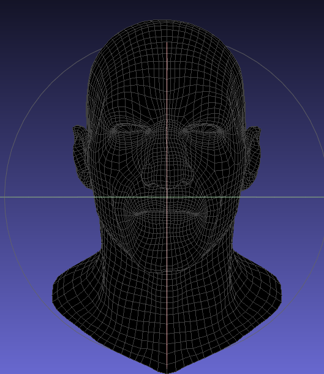
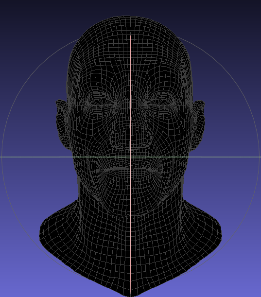
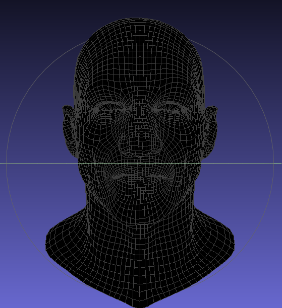
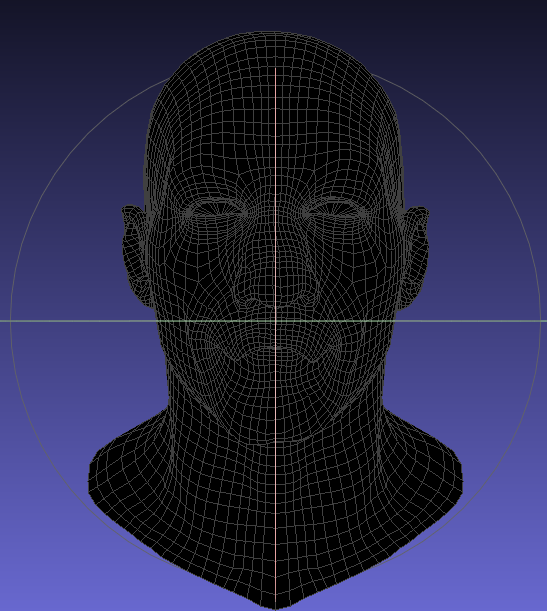
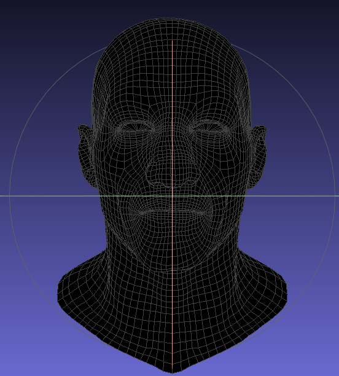
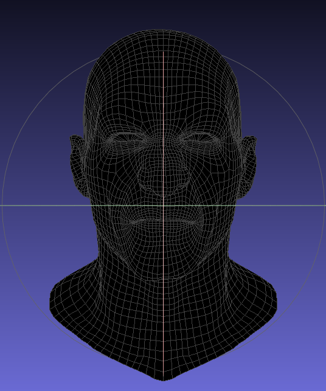

Celebrity Simulator
Celebrity Simulator is a small game I made for CSCE 450. It involves the user being a celebrity walking down the red carpet, attempting to strike poses for paparazzi. Below is a video explaining the project and demonstrating the gameplay.
Elaborating on some brushed-over things:
- The values of the goal expressions are generated sequentially between runs with a call to rand()
- As I mentioned, there were 6 blendshapes making up the goal expressions for the celebrity. List of the 6 shapes below, with images:
-  - Victor with brows down
-  - Victor with brows raised
-  - Victor with jaw clenched
-  - Victor with lips closed
-  - Victor with nose dialated
-  - Victor Sneering
- The way the game determines if the user was "correct", is by calculating the average difference between the 3 slider "goal" positions, and the 3 slider "current" positions. If the difference is below a certain threshold, it gives the user the win